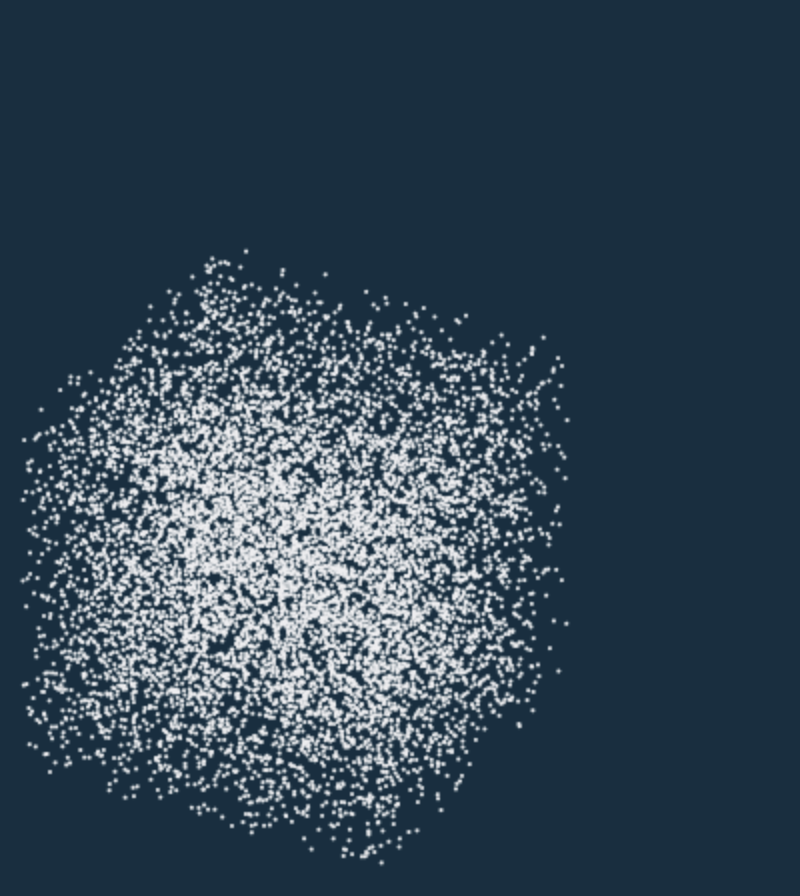

Snow simulation has been a challenging task in the field of computer graphics, since the properties of snow involve both solid and fluid. Existing methods of snow simulation usually implement material point method (MPM) [1] on a specific engine, such as Unity. In this project, we adopt a novel and productive language Taichi [2] designed for physical simulation and implement moving-least-square MPM to simulate realistic snow particles in 2D and 3D. In the following sections, we describe experience and brief tutorial for using Taichi to simulate snow, as well as introduce comprehensive technical approach.
In this section, we describe the reasons to use and experience using the Taichi language.
From the planning phase of our project, we have identified a number of potential issues that need to be taken care of, some significant ones include:
Initially, we decided to use Unity to accomplish 1 and some other libraries to accomplish 2. Nevertheless, we then discovered that it would still take a significant amount of work to let Unity render correctly; moreover, we will need to spend a considerable amount of time writing code to use certain libraries in Unity.
During our exploration of what libraries to use, we discovered the Taichi language. It is a Domain Specific Language (DSL) built around python for numerical computation and graphics developed by Dr. Hu Yuanming. We decided to experiment with it, and the outcome was awesome. I will discuss pros and cons of using Taichi lang below.
Advantages:
Of course, this is not to say that Taichi is perfect, and I will name some disadvantages below.
We first initialize desired number of particles. For each particles, we initialize position as x, velocity as v, deformation gradient as F, and affine velocity field as C. Deformation gradient essentially is the alternation of the configuration of each particle after the deformation process given a certain configuration [1]:3. Mathematically, if we define deformation to be \(x = \phi(X) \) where \(X\) is the undeformed configuration, then the gradient is defined as \(\frac{\partial\theta}{\partial X}\). For initial state, x can be random position, and v has to be 0 vector. Deformation gradient should be identity matrix, and C should be zero matrix. If the initail parameters is not set as mentioned. The particles will not fall down like snow and will jump restlessly. For 2D simulation, x and v are 2 elements ti.Vector. F and C are 2x2 ti.Matrix. For 3D simulation, we simply change 2D vectors to 3D and 2x2 matrices to 3x3. The below images show the one of the possible initial positions and states for simulation.

|
|

|
Before we start updating particles, we need to set up the environment. We set particles color to 0xEEEEF0 which is white. We can also change the color to any color. Then, we set the gravity to [0, -10] for 2D simulation and [0, -10, 0] for 3D simulation. Simulation step is set to an integer. We found that step of around 25 is enough to make the snow fall down. If the step is set too large, the particles will start to adjust its position, repealling each other, and become unrealistic in the later steps. The artifacts is shown below.

|
Next, for each simulation step, we update the particles state. The particles should first change to gird space. Specifically, there are number of grid * number of grid places that particles can be in, and number of grid * number of grid * number of grid places for 3D. Number of grid parameter is usually 128. Grid space is convenient for tracking deformation gradient, velocity, mass, and position for particle. To change particles to grid space, we first clear the grid at each step. Setting grid velocity to 0 vector and mass clear the grid.
Then, we update deformation gradient F using the change in time dt and affine velocity field C. The update formula is shown below.

|
For the next step, we calculate the hardening coefficient h, indicating how hard/compressed is the snow. The compressed effect is shown in Figure 4.
h = ti.exp( k * (1.0 - Jp[p]))
|
|
|
|
k is an adjustable hyperparameter, and we set k to 10. Jp is determinant of F. We update lame parameters, lambda and mu, being functions of the plastic deformation gradients. The update formula is shown below.

|
Then, we bound the first 2 singular value of F to ensure plasticity. Specifically, we first do SVD on F.
U, sig, V = ti.svd(F[p])
Bound first 2 singular value:
sig[d, d] = min(max(sig[d, d], 1 - 2.5e-2), 1 + 4.5e-3) for d = 0, 1
Finally, we reconstruct deformation gradient.
F[p] = U @ sig @ V.transpose()
After getting the deformation gradien, we calculate stress. We use stress to update particles velocity.
stress = 2 * mu * (F[p] - U @ V.transpose()) @ F[p].transpose() + ti.Matrix.identity(float, 3) * lambda * J * (J - 1)
Besides stress, We also have to consider other forces like mass for itself, gravity, neighboring particles collision, etc. Therefore, we add stress to the current grid space grid[i, j, k] as well as adding weighted gravity, looping through the neighboring 3x3 grid to add the effect of these grids. The detailed implementation is shown in our code. We also need to consider "edge" cases: If i, j, k is out of bound, we need to clear the current grid[i, j, k], setting velocity and mass to 0.
In the end, we convert grid to particles. Specifically, we take the grid velocity, multiply a weight to become the new particle velocity. Using the velocity, we also update the position. Position update rule is shown below.

|
In this section, we describe the problems encountered and solution.
During implementing the 2D snow simulation, when overall physical simulation is not implemented correctly, the particles will disappear for the substep. The solution is to check the implementation with paper again and again. It was really helpful to write down the algorithm on a paper, since the original paper is hard to follow.
After finishing 2D simulation, we found that, after snow particles falls onto the ground, they will adjust the position. As time goes on, the particles will become evenly positioned, which is super unrealistic. We plan to solve this completely. However, we cannot find a solution to remove this effect because this is caused by the original physical simulation formula. Therefore, as mentioned in the technical report section, we reduce the simulation step. Since this effect will only occur in the late stage of simulation step, reducing the simulation step will not allow particles to move much.
During the implementation of 3D version, we found that the particles look like boiling water. Specifically, the particles will not rest when hitting the gound. They keep jummping, colliding on each other, and never ends. I thought it was I forgot to implement neighboring particle collision. After checking, I found that I forgot to initialize velocity and deformation gradient properly. After adding the initialization, the snow landed as desired. Therefore, proper initialization is critical. Without it, the simulation is not snow, but some knid of bug art. I still found the simulation interesting with this jummping bug.
The most valuable lesson learned for us is to use Taichi language. This language is super useful for physical simulation. Besides snow, Taichi is able to simulate smoke, water, jelly, sand without writing much code.
The following videos showcase our 2D snow simulation with different shape of snow, forces applied to the snow, and different stiffness of the snow.
This video shows a block of snow hitting an invisible wedge and a "block-esque" object fells onto the snow, further compressing them. Notice that there is friction on the ground so snow will gradually halt. We did not succeed in implementing rigid body, and the block is implemented with densely distributed particles set to be hard.
This video shows a block of snow hitting a sticky wall, then another block of snow hit the previous block of snow that is still sticking on the wall.
This video serves as the proof-of-concept for 3D snow simulation.
You can find our final presentation slides here and presentation video below.
The below are comparisons of snow under different conditions: recent snow (fluffier and less rigid), normal snow (default condition), and old snow (harder and more rigid, less sticky).
This video shows the characteristics of snow when it is newly fallen:
This video shows the default characteristics of snow:
This video shows the characteristics of snow when it is hardened, for example, days after touching the ground:
PRE-MILESTONE VIDEOS BELOW
The first video is two snow balls hitting on each other. The constructed shapes are two circles. We increase the hardening coefficient to simulate that snow gets harder when compressed. Therefore, when two balls collapse, the snow particles are relatively stuck together. Notice that the particles from one ball will stick to another ball, due to the stickiness property of the snow.
For the second video, it shows three snowballs hitting the wall. We apply three equally horizontal forces to each of them. The top small ball has the smallest hardening coefficient and the coefficient increase for the two snowballs below. Therefore the top snowball breaks up more compared to the two below.
For the third video, it demonstrates the situation of snowfall. Notice that the yellow snowball with a large hardening coefficient will go through the other snow particles.
For archive purpose, milestone presentation is available here.
[1] Stomakhin, Alexey, et al. "A material point method for snow simulation." ACM Transactions on Graphics (TOG) 32.4 (2013): 1-10.
[2] Hu, Yuanming, et al. "Taichi: a language for high-performance computation on spatially sparse data structures." ACM Transactions on Graphics (TOG) 38.6 (2019): 1-16.
[3] Yuanming Hu†, Yu Fang†, Ziheng Ge†, Ziyin Qu, Yixin Zhu†, Andre Pradhana, and Chenfanfu Jiang. 2018. A Moving Least Squares Material Point Method with Displacement Discontinuity and Two-Way Rigid Body Coupling. ACM Trans. Graph. 37, 4, Article 150 (August 2018), 14 pages. https://doi.org/10.1145/3197517.3201293

ganqx2001 at berkeley
liyijun at berkeley
This is a place holder for contribution.

frankxblackburn at berkeley
shijiayang at berkeley